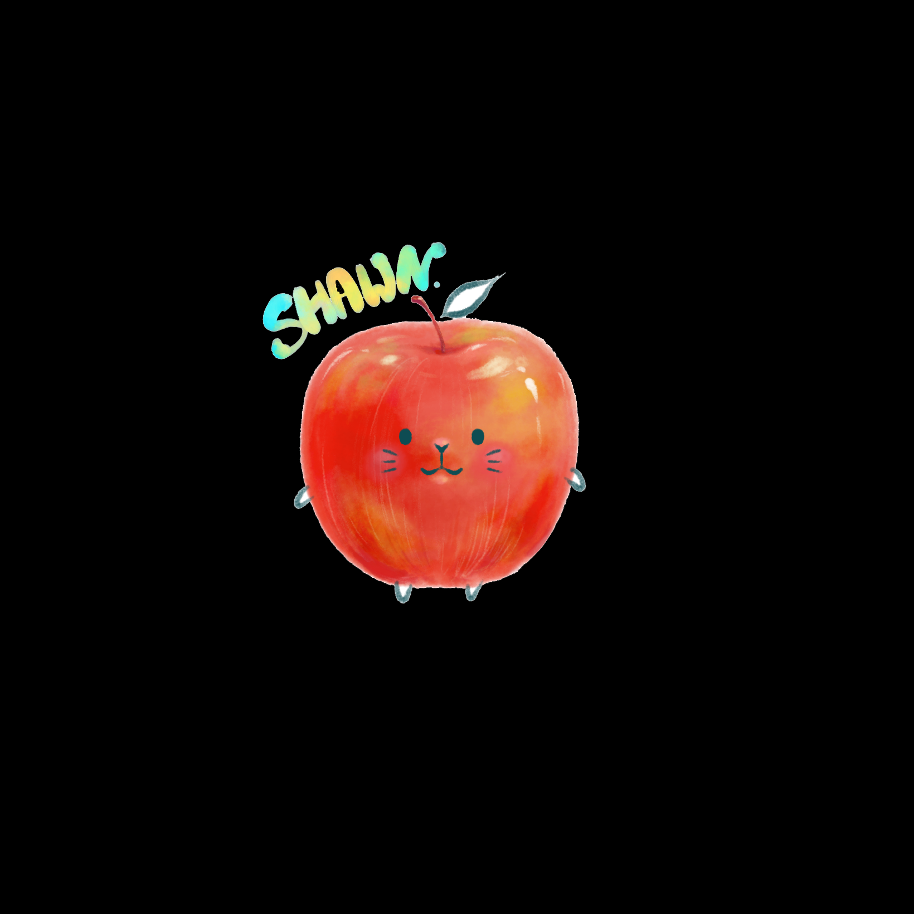

Hi there! 我是 Shawn，我是一位澎湖高中學生，對於蘋果、資訊科技和數位行銷很感興趣，也略有研究，目前在學習 Python 和 dgital marketing 兩個領域。
｜經歷 Experience
｜能力 Ability
我熟悉蘋果產品與日常 3C 科技，也對內容寫作、搜尋引擎優化 （ SEO ）與社群經營有一定了解，目前有一年多的相關經驗與實務操作。
除此之外，我也自學 Python 與網站前端程式語法（ 包含 HTML, CSS, Javascript ），擁有基礎的 Coding 觀念與邏輯。
｜作品集 Portfilio
- IG 貼文 【 iPhone WiFI 跑很慢？改這設定讓網路 #變快 】
- 【購買建議】不知道上大學買什麼筆電？2020大學生筆電選擇要點與推薦機型（上篇）
- 如何投影iPhone/iPad畫面到電視或電腦？免App也能鏡像輸出螢幕畫面
- Apple Watch 沒有 LINE 來電 / 訊息通知？這樣設定就能收到通知！
｜聯繫 Contact
Email : kcshawn19@gmail.com
Instagram : jschang.tech
Linkedin : https://www.linkedin.com/in/kcshawn/
